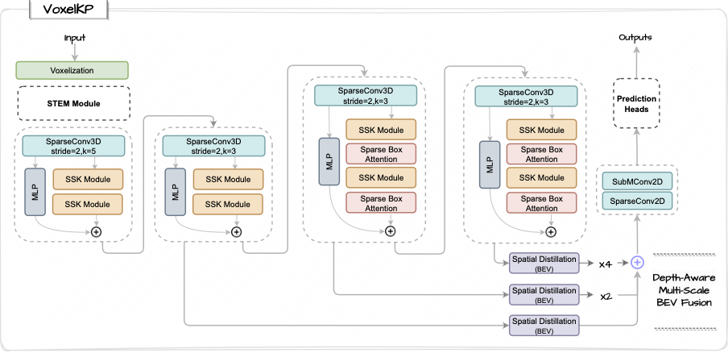

We present VoxelKP, a novel fully sparse network architecture tailored for human keypoint estimation in LiDAR data. The key challenge is that objects are distributed sparsely in 3D space, while human keypoint detection requires detailed local information wherever humans are present. We propose four novel ideas in this paper. First, we propose sparse selective kernels to capture multi-scale context. Second, we introduce sparse box-attention to focus on learning spatial correlations between keypoints within each human instance. Third, we incorporate a spatial encoding to leverage absolute 3D coordinates when projecting 3D voxels to a 2D grid encoding a bird's eye view. Finally, we propose hybrid feature learning to combine the processing of per-voxel features with sparse convolution. We evaluate our method on the Waymo dataset and achieve an improvement of 27% on the MPJPE metric compared to the state-of-the-art, HUM3DIL, trained on the same data, and 12% against the state-of-the-art, GC-KPL, pretrained on a 25X larger dataset. To the best of our knowledge, VoxelKP is the first single-staged, fully sparse network that is specifically designed for addressing the challenging task of 3D keypoint estimation from LiDAR data, achieving state-of-the-art performances.
A visual demonstration of our baseline model (top) and the proposed VoxelKP (bottom). Our VoxelKP offers improved keypoint estimation with precise locations and fewer false positives. The insets are color-coded according to the legend in the figure. In the green-colored insets, a comparison with the ground truth is shown, with ground truth in red and predictions in blue.
LiDAR point clouds typically contain sparsely distributed objects that occupy only small regions of the full 3D space. While the distribution of humans in space is sparse, in contrast, human keypoints require dense information wherever a human is present. To handle this density variation, we aim to improve feature learning in the regions where keypoints need to be located and detailed information is required.
| Method | Extra Data | Description | MPJPE cm. |
|---|---|---|---|
| Zheng et al. CVPR 22 |
✓ | Trained on 155,182 objects from internal data. Generated pseudo labels from 2D image labels. | 10.80 |
| GC-KPL CVPR 23 |
✓ | Pre-trained on synthetic data. Fine-tuned on ground truth. | 11.27 |
| ✓ | Pre-trained on 200,000 Waymo objects. Fine-tuned on ground truth | 10.10 | |
| HUM3DIL CoRL 22 |
✗ | Randomly initialized | 12.21 |
| VoxelKP Ours |
✗ | Randomly initialized | 8.87 |
VoxelKP achieved SOTA on Waymo dataset without using additional data.